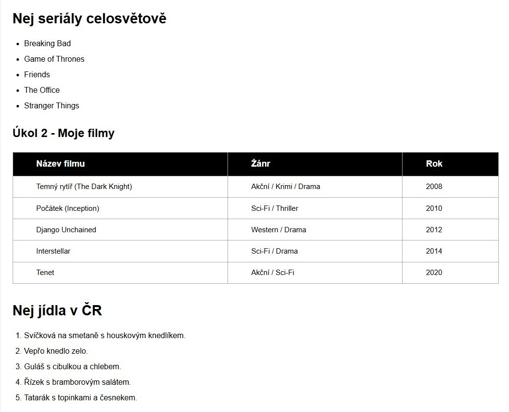

Top v kategoriích
11/2025
Postupuji podle ověřeného procesu – od analýzy přes wireframy a vizuální návrh až po testování a průběžnou optimalizaci.
Díky zkušenostem z testování se dívám na rozhraní nejen z pohledu estetiky, ale i z pohledu funkčnosti, použitelnosti a chybových stavů.
Kombinuji logiku testera s citem pro design. Každý návrh posuzuji v souvislostech: jak jej uživatel pochopí, kde by se mohl zaseknout a jaké kroky lze ještě zjednodušit.
Cílem je vytvořit rozhraní, které nejen dobře vypadá, ale hlavně pracuje spolehlivě v reálném prostředí – jasně, intuitivně a bez zbytečných bariér.
 analýza
analýza
 wireframy
wireframy
 design
design
 testování
testování
 optimalizace
optimalizace
Jmenuji se Marie Schneider a jsem UX/UI designérka, která miluje promyšlený design, jednoduchost a vizuály, které dávají smysl. K UX/UI jsem se dostala přes testování softwaru a tvorbu webů – postupně mě začalo fascinovat, proč lidé klikají tam, kam klikají, a co způsobí, že se v rozhraní cítí jistě. To mě přivedlo k absolvování profesionálního UI/UX kurzu, kde jsem rozvinula procesní myšlení, práci s wireframy, vizuálním stylem a testováním návrhů.
Vystudovala jsem management kvality a několik let pracovala jako inženýr kvality ve vývojové laboratoři. Získala jsem silný analytický základ, cit pro detail a pochopení procesů, které dnes využívám i při tvorbě digitálních řešení.

Když jsem potřebovala víc flexibility a cítila touhu posunout kariéru, rozhodla jsem se vstoupit do IT. Testování softwaru pro mě bylo přirozeným krokem – spojovalo logiku, strukturu a schopnost hledat chyby i souvislosti v uživatelském chování.

Postupně jsem zjistila, že mě nejvíce přitahuje moment, kdy funkčnost a vizuální stránka tvoří jeden celek. Díky práci ve firmě jsem mohla zkoušet různé oblasti vývoje a nejvíce mě vtáhl UX/UI design.

Analytická minulost mi pomohla při přechodu k designu. Objevila jsem svět wireframů, prototypů i uživatelského výzkumu a vystavěla si vlastní proces návrhu. Absolvovala jsem kurz UX/UI a začala tvořit projekty spojující estetiku, logiku a použitelnost.
Dnes se věnuji návrhu rozhraní, která jsou přehledná, moderní a příjemná na používání. Spojuji zkušenosti z kvality, testování i designu, díky čemuž vytvářím funkční a promyšlená řešení.

Ráda se učím nové věci, hledám inspiraci a přijímám výzvy. Cesta od laboratoře k digitálnímu designu mi ukázala, že změna může být tím nejlepším impulzem. Pokud hledáte design založený na logice, použitelnosti a čistém vizuálu, ráda pomohu posunout váš projekt dál.
Ukázky práce, kde se potkává UX, UI a testování v praxi.
Nabízím moderní a funkční webová řešení – od tvorby webu, přes e-shopy až po redesign a dlouhodobou podporu.
Ozvěte se mi a domluvíme si krátký hovor, kde probereme, co přesně potřebujete. Ať už potřebujete nový web, funkční e-shop nebo jen vylepšit to, co už máte, projdeme společně, co dává největší smysl. Stačí krátká konzultace, kde si ujasníme vaše potřeby, cíle a rozpočet. Podle toho navrhnu konkrétní postup - ať už jde o kompletní redesign, UX audit nebo dlouhodobou spolupráci.